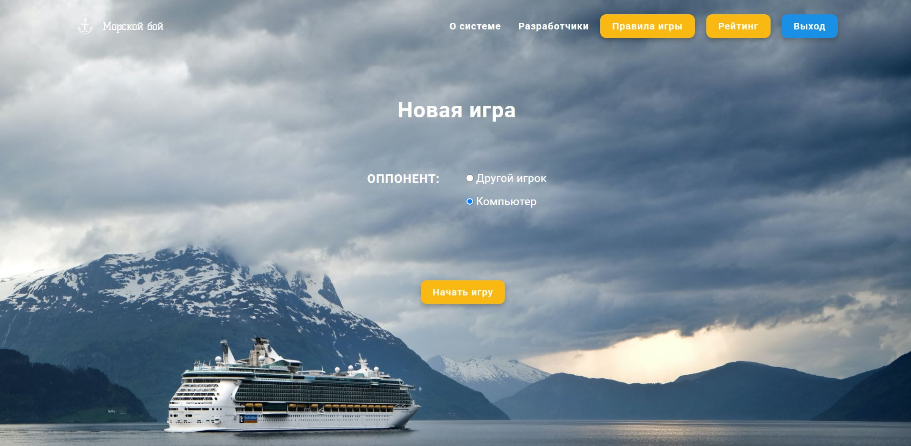
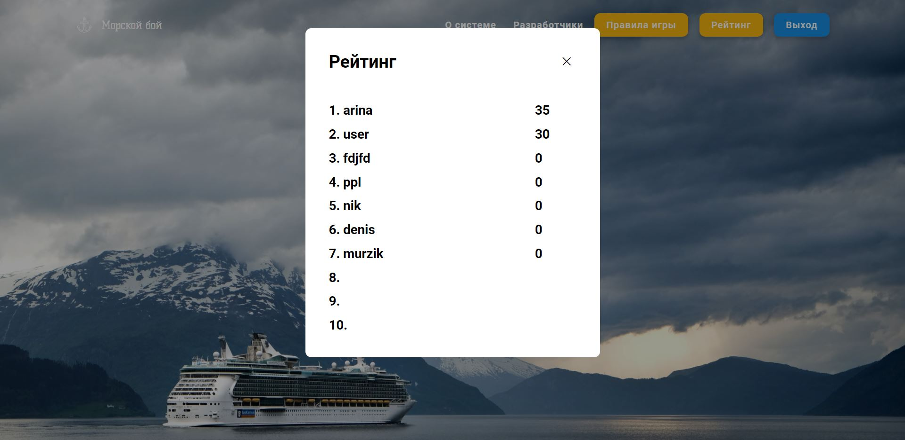
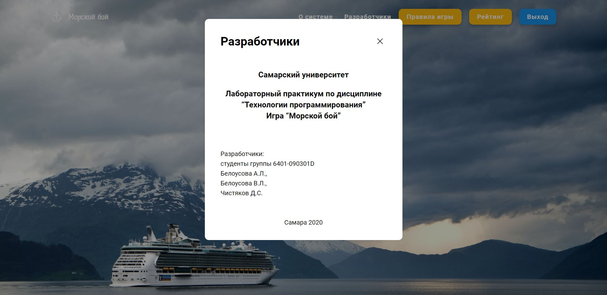
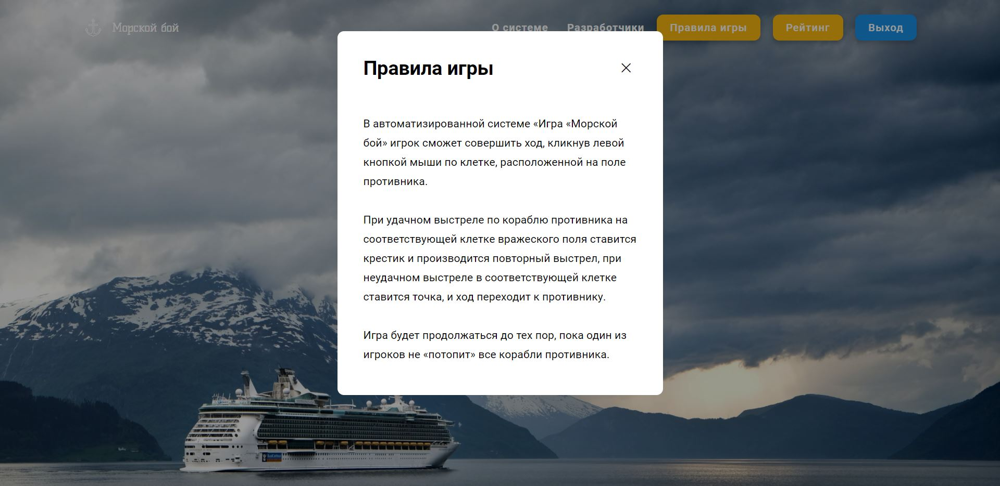

Справка автоматизированной системы «Игра «Морской бой»
- Содержание:
- Введение
- Авторизация, регистрация, восстановление пароля
- Начало игры
- Расстановка кораблей, Рейтинг, Разработчики, Правила игры и информация о системе
- Ведение боя
- Завершение игры
- Выход из системы
Введение
Автоматизированная система «Игра «Морской бой» может быть использована в целях автоматизации процесса игры. Полностью автоматизирует не только процесс игры, но и расстановку кораблей и генерацию рейтинга игры.
Программа использует базу данных PostgreSQL (требует предустановления сервера PostgreSQL) и любой доступный браузер. Программа совместима с Windows XP и Windows Vista. Системный требования: 50 Mb оперативной памяти, 5 Mb жесткого диска.
Авторизация, запуск программы
При запуске программной системы появляется окно авторизации, представленное на рисунке. В поля логин и пароль необходимо ввести данные зарегистрированного пользователя и нажать кнопку Вход.
Если пользователь не зарегистрирован, то ему необходимо нажать кнопку Регистрация и заполнить форму, представленную на рисунке: ввести имя, фамилию, логин, кодовое слово и пароль.
Если пользователь забыл пароль, то он может нажать кнопку «Забыли пароль?» и заполнить форму (ввести логин, кодовое слово и новый пароль) для смены пароля.
Начало игры
После авторизации откроется страница главного экрана, представленная на рисунке. Она предназначена для начала игры. На данной странице пользователь может начать новую игру, выбрав тип оппонента, способ расстановки кораблей и, в случае выбора автоматической расстановки, стратегию расстановки, либо загрузить предыдущую игру, выбрав файл на компьютере. Также пользователь имеет возможность просмотреть рейтинг, правила игры, а также информацию о системе и о разработчиках.
При нажатии на кнопку «Рейтинг» должно появиться окно с 10 лучшими игроками, представленный на рисунке.
Пользователю должен быть доступен пункт меню «Разработчики», при нажатии на который откроется окно с краткой информацией о разработчиках.
При нажатии на кнопку «Правила игры» откроется модальное окно с описанием.
При нажатии на кнопку «О системе» откроется html-страница в браузере.
Расстановка кораблей
Страница расстановки кораблей представлена на рисунке, где пользователь может перетащить корабли на поле, разместить их и повернуть щелчком правой кнопки мыши. Также пользователю всегда доступны кнопки «Рейтинг», «О системе», «Разработчики», «Правила игры» и «Выход». После успешной расстановки кораблей пользователь должен нажать на кнопку «Начать игру» для начала игры.
Ведение боя
Прототип страницы ведения игры представлен на рисунке, где пользователь сможет щелчком правой кнопки мыши по клетке поля противника «выстреливать» до тех пор, пока не «потопит» все корабли противника, или пока противник не потопит все его корабли. Также пользователю всегда доступны кнопки «Рейтинг», «О системе», «Разработчики», «Правила игры» и «Выход».
Завершение игры
После завершения игры должно появиться сообщение, содержащее информацию о выигрыше или проигрыше пользователя, количестве заработанных баллов и кнопки для начала новой игры или выхода из игры.
Выход из системы
Для выхода из системы пользователю необходимо кликнуть по кнопке Выход и система переадресует пользователя на страницу авторизации.